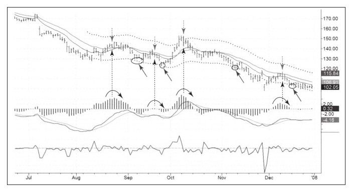

请记住周线顶背离是做空及卖出的信号，两条移动平均线向下交叉是市场走熊的信号。一旦长期图表给出卖出及做空的战略信号，就该在日线图中制定入场和出场有关的战术决策，这是三重过滤网系统的精髓。
图9-9是SHLD开始下跌后6个月的走势图，价格从180美元附近跌到100美元之下。我们使用一个简单的战术规则来进行交易，只要MACD柱的数值向下穿越零轴我们就做空。价格类牛市的反弹表明市场主趋势仍然是下跌趋势，价格跌到通道下轨附近时，市场处于超卖水平，平空正当时。
从图中可以看到四个做空信号，每个信号都用垂直虚箭头标注。每个信号都发生在日线的顶部，精确度非常高。前两个信号发生后持续的时间较短，第三个和第四个信号持续时间很长，带来的利润也很多。
因为做多时不太好用，所以不算是完美的系统，但是个完善的系统。如果有几只周线图给出战略做空信号的股票，用这个系统在日线图上进行交易，你会做得相当好。
务必记住完美是优秀的敌人，尽管完美出现时对自尊心有几大好处，但交易这个游戏不是为自尊心而战，而是为赚钱而战。要学着接受抓不住绝对顶部和绝对底部的现实，保持从容心态攫取趋势中间部分的利润并对此知足。

接下来我们一起追踪SHLD的下一幅日线图并看看这个系统在2008年表现如何。